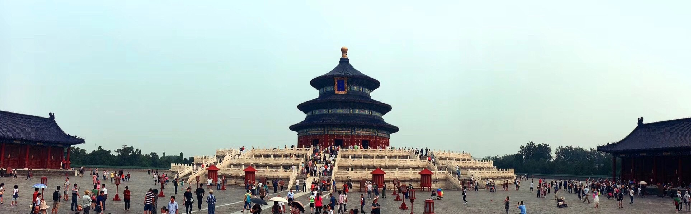
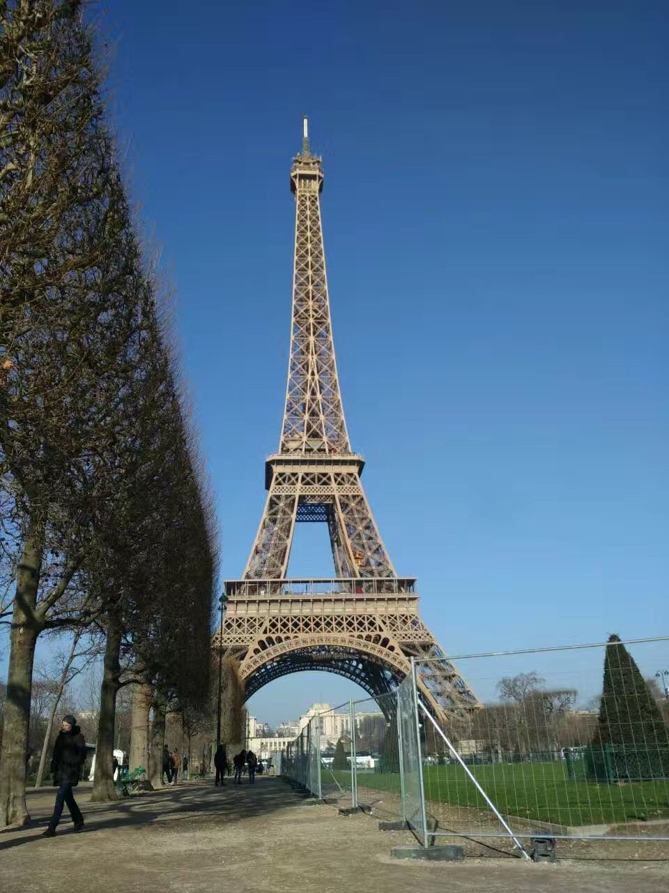

My hometown, China, is the third largest country in the world with a diverse range of landforms. As one of the four ancient civilizations, China also has a long history with rich heritage cultural resources. Travelling in China helps me know about this blue planet and enjoy beautiful natural and humanity landscapes.
A different culture is also well worth experiencing. I did learn a lot about the history, culture and customs from two trips to Europe.
